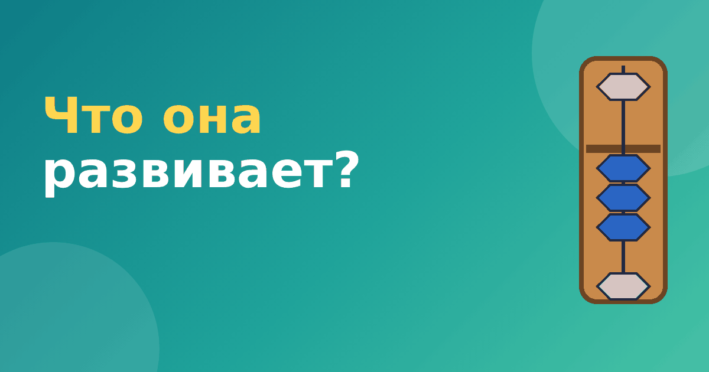

Что развивает ментальная арифметика: честный разбор

Реклама ментальной арифметики обещает много: скорость, память, внимание, «работу обоих полушарий». Родители вправе спросить, что развивает ментальная арифметика на самом деле. Мы разберём каждое обещание отдельно и скажем честно, где есть понятная логика, а где доказательств пока не хватает.
Скорость вычислений
Это самое очевидное и самое надёжное. Если ребёнок месяцами тренирует сложение и вычитание по одной и той же схеме, он считает быстрее. Так бывает с любым навыком: чем больше практики, тем выше скорость. Ребёнок, который каждый день складывает числа на абакусе, к концу курса действительно решает такие примеры заметно быстрее, чем в начале.
Но у этого утверждения есть оговорки. Скорость относится к тем действиям, которые тренировали. Выигрыш в сложении и вычитании не означает, что вырастет скорость решения текстовых задач или геометрии. Кроме того, фраза «быстрее калькулятора» верна только для очень коротких примеров. Калькулятор обрабатывает любые числа мгновенно, а ребёнок справляется с ограниченным набором.
Внимание и память
Чтобы считать по мысленной картинке, нужно удерживать образ и следить за порядком действий. Это нагрузка на рабочую память и внимание. Логично предположить, что регулярные занятия укрепляют именно эти умения, и многие педагоги отмечают, что дети становятся собраннее на занятии.
Однако строго доказанным считать этот перенос нельзя. Исследования ментальной арифметики немногочисленны, часто небольшие и дают разные результаты: в одних работах находят улучшение зрительной рабочей памяти, в других эффект исчезает после окончания тренировок или не выходит за рамки самих счётных заданий. Это общая проблема для любых «тренировок мозга»: навык растёт в том, что тренируют, а перенос на другие области бывает слабым.
«Межполушарное взаимодействие»
Самое популярное обещание школ — что одновременная работа обеих рук и воображение «включают оба полушария». Звучит эффектно, но с научной точки зрения это упрощение. Оба полушария мозга работают практически при любой деятельности, включая чтение и разговор. Данных о том, что именно абакус даёт особое «межполушарное» развитие, нет. Поэтому при выборе курса лучше не опираться на это обещание.
Мелкая моторика и аккуратность
Здесь всё гораздо проще и честнее. Двигать бусины пальцами нужно точно и в правильном порядке. Это тренирует координацию рук и привычку не торопиться. Для младших школьников это тоже полезный побочный результат, хотя его легко получить и другими занятиями, например лепкой, конструктором или рисованием.
Уверенность в числах
Иногда самое ценное — не навык, а настроение. Ребёнок, который освоил понятную систему и видит, что у него получается, меньше боится цифр. Это связано с самим опытом успеха, а не с особыми свойствами абакуса. Так же работают и другие методы, например приёмы Трахтенберга или обычная таблица умножения без зубрёжки.
Как относиться к обещаниям
Вот несколько правил, которые помогают не разочароваться.
- Оценивайте результат по конкретным навыкам. Спросите себя: стал ли ребёнок увереннее складывать и вычитать? Если да, цель курса достигнута.
- Не ждите роста оценок по всем предметам. Школьная успеваемость зависит от десятков причин.
- Не принимайте на веру слова «развивает интеллект». Хороший курс говорит о конкретных умениях.
- Следите за интересом ребёнка. Если занятия превратились в мучение, никакая польза этого не оправдает.
Рабочая память: что это и при чём здесь абакус
Рабочая память — это способность держать в голове несколько элементов и что-то с ними делать, например помнить число и добавлять к нему другое. Когда ребёнок считает цепочку чисел, ему нужно удерживать текущий результат и не терять порядок действий. Логично, что регулярные упражнения тренируют рабочую память именно в таких задачах. Вопрос в том, переносится ли улучшение на другие задания, и здесь данные расходятся. Поэтому разумная позиция такая: тренировка рабочей памяти — приятный побочный эффект, а не главная цель занятий. Главная цель — научиться считать и получать от этого удовольствие.
Нужна ли вообще эта польза
Можно смотреть на ментальную арифметику проще: это интересное занятие, которое учит считать и концентрироваться. Для многих детей этого достаточно. Мы подробно писали о том, как устроен метод, в статье что такое ментальная арифметика, а про распространённые мифы — в материале ментальная арифметика: мифы и реальность.
Если хотите проверить, нравится ли ребёнку абакус, начните с бесплатного модуля в тренажёре «Ментальная арифметика»: он не требует покупки счётов и займёт всего несколько минут.